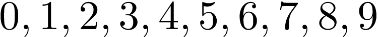
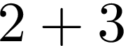
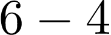
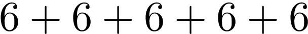
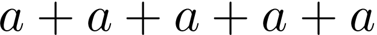
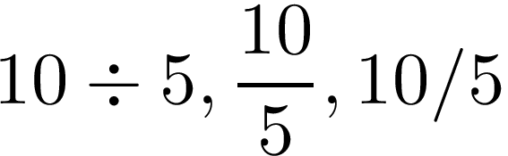

Esta seção de introdução sintetiza os simbolos usados no trabalho matemático. Ele descreve convenções usadas pelos matemáticos, engenheiros e cientistas.
Após ler este texto, você dever ser capas de:
A matemática tem a sua própria linguagem, muito da qual nós já estamos familiarizados. Por exemplo os digitos
que são partes das nossas vidas diárias. Quer você se refira ao 0 como 'zero', 'nada', 'nulo', todos nós entendemos o seu siginificado.
Há muitos simbolos na matemática e a maioria deles é usada como uma forma precisa de abreviação. Nós precisamos ser confiantes quando usamos estes simbolos, e para ganhar confiança nós precisamos conhecer o seu significado. Para enteder o seu signifificado há duas coisas para nos ajudar.
Vamos dar uma olhada em algums simbolos comumente associados a operações matemáticas.
Palavras associadas com este simbolo são 'mais', 'adição', 'aumento' e 'positivo'.
Então, por exemplo, se nós vemos o simbolo + escrito na soma
nos entendemos que o contexto é de adição dos dois numeros, 2 e 3, resultando 5. Então aqui o simbolo + é uma instrução para adicioar dois números.
Vamos ver o uso do simbolo + em outro contexto.
+44 191 123 4567
Nesse contexto o simbolo + siginifica que o número de telefone é do extrangeiro, e o código do país é 44. Ent]ao nós vemos que o simbolo + pode ter significados completamente diferente em contextos diferetnes, é importante ser claro sobre o contexto.Palavras associadas com este simbolo são 'menos', 'subtração', 'tirar', 'negativo', 'decrescimento'.
De novo, para entender o simbolo, nós precisamos de um contexto.
nós sabemos que isto siginifica de 6 subtraia 4, e nós sabemos a resposta que é 2.
Em um contexto diferente, nós podemos ver -5°C, significando uma temperatura de menos cinco graus Celsius, que é cinco graus abaixo de zero.
Palavras associadas com este simbolo são 'multiplicar', 'pacotes de', 'vezes'.
Isto é realmente uma abreviação de adição. Por exemplo, se vermos
nós temos cinco pacotes de seis, ou cinco seises, e em nossa forma abreviada nós podemos escrever 5 × 6.
Sumponhamos que temos
Nós podemos reescrever esta expressão como 5 × a. Entretanto, neste contexto, especialmente em trabalhos escritos a mão, nós podemos confundir o simbolo × com a letra x, e então nós frequentemente escrevemos simplismente 5a. Nos percebemos que nossa abreviação se tornou ainda mais curta. Multiplicação é uma das raras ocasiões que nós podemos omitir um simbolo.
Divisão é representada de diversas maneiras. Por exemplo
são três fomas equivalentes de escrever 10 dividido por 5. Nós também podemos ler como 'quanto vezes 5 dá 10?